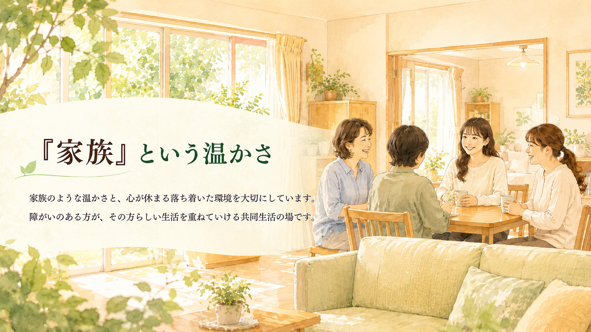
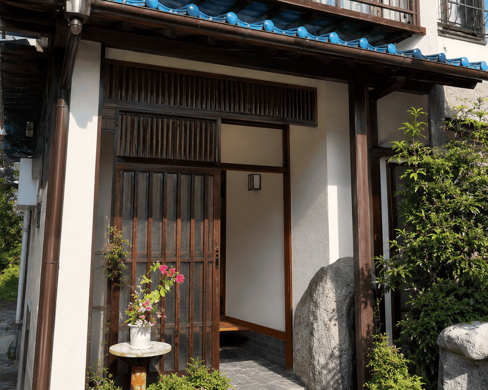
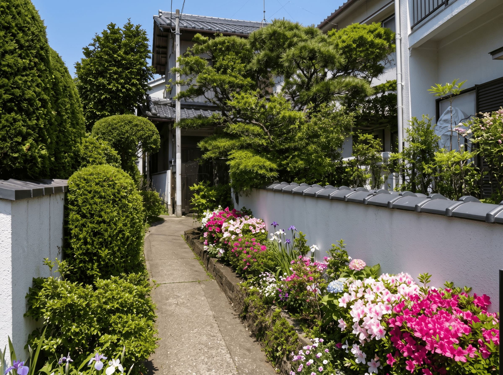
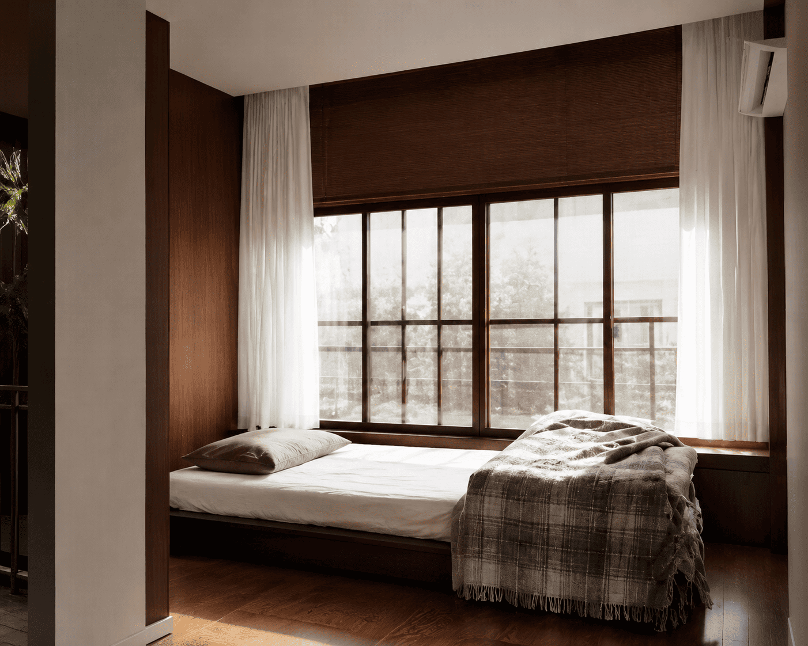

Contact
ご見学・ご相談はお気軽にお問い合わせください
生活のこと、空き状況、体験入所の流れなど、まずはお電話でご相談いただけます。
フレンドリー松戸・柏
女性専用 の障がい（知的・精神・身体・難病）の方を対象としたグループホームです。
24時間365日、手作りの食事をご用意しています。
- 全室個室で、プライバシーに配慮した生活環境です。
- 日中は就労や作業所、デイケア・デイサービスなど、それぞれの予定に合わせて過ごします。
- 生活リズムを整えながら、お一人おひとりのペースで次の一歩を支援します。
- ホームのルールをみんなで話し合い、世話人や職員と決めていきます。
- 困りごとや悩みごとは、管理者や世話人に相談しながら一緒に考えていきます。
看護師が所属しており、体調不良時にも状況に応じて対応します。
- 食事内容や服薬について、必要に応じて確認します。
- 行政機関等の手続きもお手伝いします。
- 金銭管理は、世話人や職員と一緒に確認しながら進めます。
夜勤体制があり、夜間も落ち着いて過ごせるよう見守ります。
- 夜間も職員が状況を確認します。
- 必要に応じて声かけや見守りを行います。
- 落ち着いて休める生活環境づくりを大切にしています。
ホームの雰囲気 (グループホームの外観です。)
お花に囲まれた入口を進むと、趣のある玄関が待っています。

外観
外観
居室